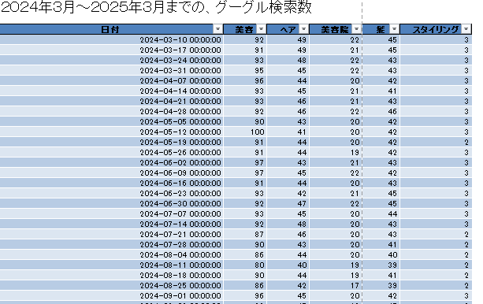
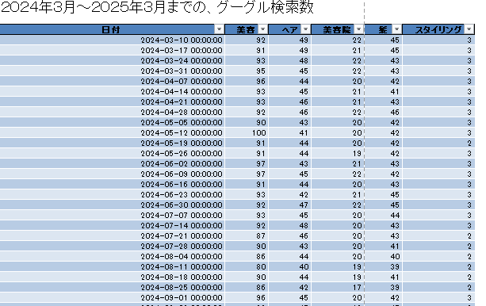

丁寧なヒアリングで
クライエント様のご意向に沿ったスタイリッシュなデザイン
SEO対策やGoogle Analyticsを用いた分析もお任せください。

丁寧なヒアリングで
クライエント様のご意向に沿ったスタイリッシュなデザイン
SEO対策やGoogle Analyticsを用いた分析もお任せください。
美容商材の需要をGoogle APIにより取得し、美容全般の意識調査を行う。
一年を通して、いつどのくらいの検索数があるかを調べ、
美容品の広告宣伝などの施策につなげる試み
使用スキル：Python,Excel,googletrend API
課題：キーワード選定を具体的な商材に絞り、事実に則したより忠実で実践的なデータを収集する。
それらに基づく再現性のある施策を打つ
 

1995.11 was born
My Favorite foods: マカロン, 蕎麦
Job: webデザイン, データ分析、マーケティング
web制作を独学で始める。8年前にフライヤー制作から始まり、
今やPythonなども学び、データ分析や業務効率化なども
積極的に実務に結びつけ、能力の開拓を進める。


説明：あまり集客を求めないお店を想定。
メニューの価格設定も一律で種類も少ない。
古民家を有効活用する、地域創生事業の目的が大きめ。
全体的に暗めに色味は設定。
課題・難しかったところ
和の雰囲気を演出、壊さないようにするのに
要素の配置や色味のバランスに気を遣った。
地図など差し込めたらよい。
写真は実際のメニューと相違ないように起用。
★気づき：写真を大々的に使う場合,
JSのスライドで動きを出したほうが良い。

説明：専門性の高い意識高めな美容室を想定。
全体の雰囲気はシンプルに清潔感多めで作成。
美容室はLPの多い印象を受けたため、
１ページで完結するように設計。
課題・難しかったところ
美容業界は飽和状態なため、
LPで完結に情報をまとめ
予約に誘導するUIが多めな印象を受けました。
もっとおしゃれさを兼ねた情報の完結な伝達を
可能にするデザインを模索する余地はあると思いました。
★気づき:ウェブ制作は携わるサイトの
業界の勉強も必要ということ。

青を基調にお堅めな企業を再現。
ベンチャーのような楽しげなイメージはもたず、堅苦しく。
★気づき:メインヴィジュアルのアイキャッチは大切で
下手に画面からはみ出て情報が一目でわかりづらいと
インパクトも全体のデザイン性も下がってしまう。

JSを用いたサイト。
カーソルを動かすと波紋のような、たんぽぽの綿毛のような
演出を実装。
企業の自然や木に対する愛を想定し落とし込んだ仕立て。
★気づき：その企業にあった雰囲気やデザイン性というものは
企業らしさであり、言葉ではないノンバーバルなメッセ―ジだと思った。
いかにクライエントの意向に沿うとともに業界や企業の想いを表現できるか
クライエントの期待値を上回る意味ではとても大切な視点かもしれない。